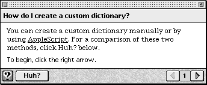
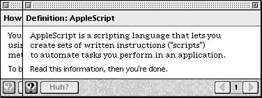
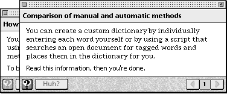

Designing Hot Text, Objects, and Rectangles
You can use hot text, objects, and rectangles to provide information that is useful but not crucial to completing the particular task on a panel. Each of these types creates a hot (or active) area on the panel. When the user clicks a hot area, Apple Guide performs the action associated with the area, for example, it opens another panel that contains related information. This panel can be one that you specifically create for the hot area or another existing panel in the guide file. Do not confuse the information provided by hot types with information that belongs on a panel associated with a Huh? button. For more information, see "Designing a Panel Associated With a Huh? Button" on page 2-64.You should follow these guidelines for using each of the hot types:
You should use an underscore to identify hot text to the user, for example, dictionary.
- Use hot text to specify certain text on the panel as a hot area. For example, you can use hot text to make the word "dictionary" a hot area on a panel.
- Use a hot object to specify a hot area using the rectangle of the next object (either text or a graphic) specified in the panel definition. For example, you can create hot objects out of
'PICT'graphics (for example, an icon).- Use a hot rectangle to make a specific rectangle on the panel a hot area. Creating a hot rectangle provides more precise control over the placement of the hot rectangle than creating a hot object, which assumes only the rectangle of the following object. Be aware, however, that this positioning might create unwanted side effects during localization. See "Designing for Localization" on page 2-93.
The appearance of a graphic or hot rectangle designated as a hot type does not change, so you should use text to indicate that it's a hot area. For example, for a hot graphic, provide the instruction "Click this graphic for more details."
Figure 2-50 shows a panel that contains a single word of hot text, indicated with an underscore. This panel also contains an active Huh? button. Therefore two panels are associated with it, one (Figure 2-51) for the hot text and one (Figure 2-52) for the Huh? button.
Figure 2-50 A single word of hot text on a panel

Figure 2-51 A panel associated with a single hot-text word on a panel

Figure 2-52 A panel associated with a Huh? button

Figure 2-52 compares two methods for creating a custom dictionary that are referred to by the original panel (Figure 2-50).